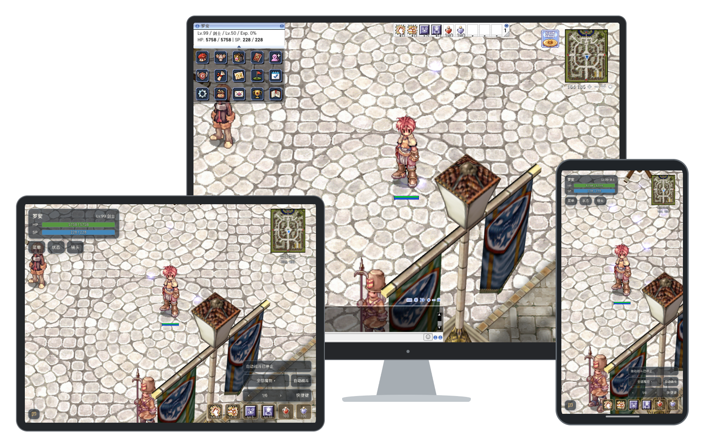
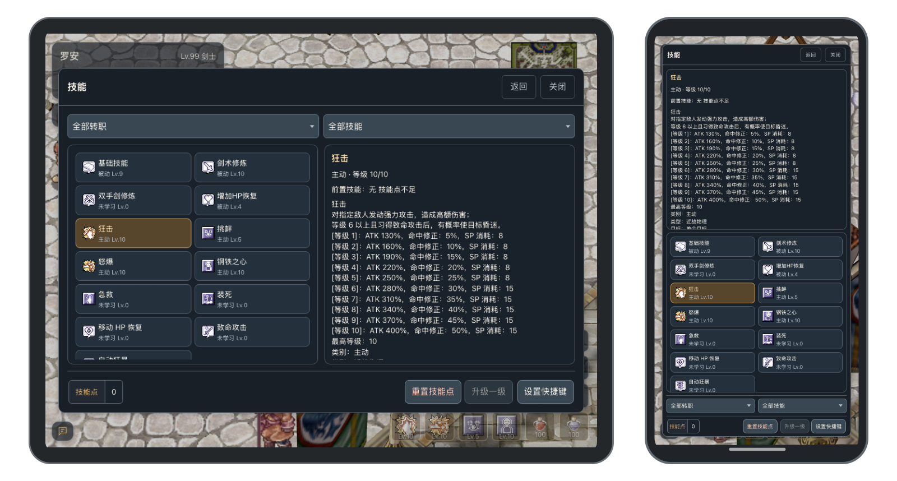
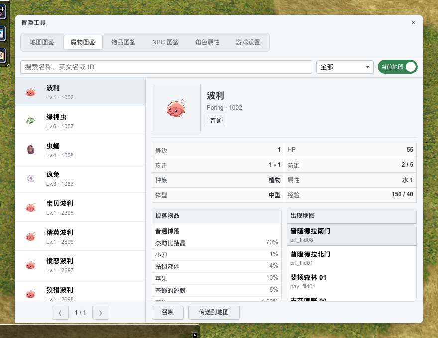
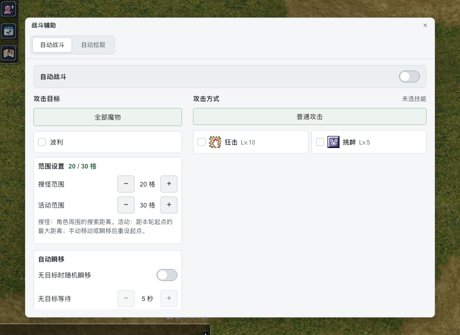
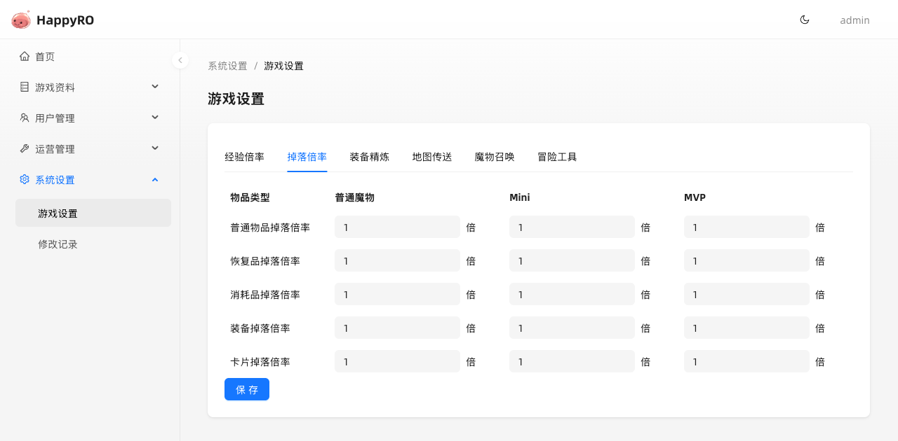

<!doctype html>
<html lang="zh-CN">
<meta charset="utf-8">
<meta name="viewport" content="width=device-width, initial-scale=1">
<title>HappyRO README 图片预览</title>
<style>
*{box-sizing:border-box}body{margin:0;background:#fff;color:#1f2328;font:16px/1.6 -apple-system,BlinkMacSystemFont,"Segoe UI",sans-serif}main{max-width:880px;margin:24px auto;padding:24px 40px;border:1px solid #d1d9e0;border-radius:6px}h1{text-align:center;font-size:32px}h2{font-size:24px;border-bottom:1px solid #d1d9e0;padding-bottom:8px;margin-top:32px}p{margin:16px 0}img{display:block;width:100%;height:auto}header p{text-align:center;color:#59636e}a{color:#0969da}@media(max-width:600px){main{border:0;padding:16px;margin:0}h2{font-size:21px}}
</style>
<main>
<header><h1>HappyRO</h1><p>在电脑、平板和手机浏览器中冒险</p></header>
<a href="../../../assets/readme/happyro-three-devices.png"></a>
<h2>触屏与跨端体验</h2><p>手机竖屏与平板横屏的技能界面。</p><a href="../../../assets/readme/happyro-responsive-skills.png"></a>
<h2>图鉴与冒险工具</h2>
<h2>自动战斗与拾取</h2>
<h2>独立管理后台</h2>
</main>
</html>
